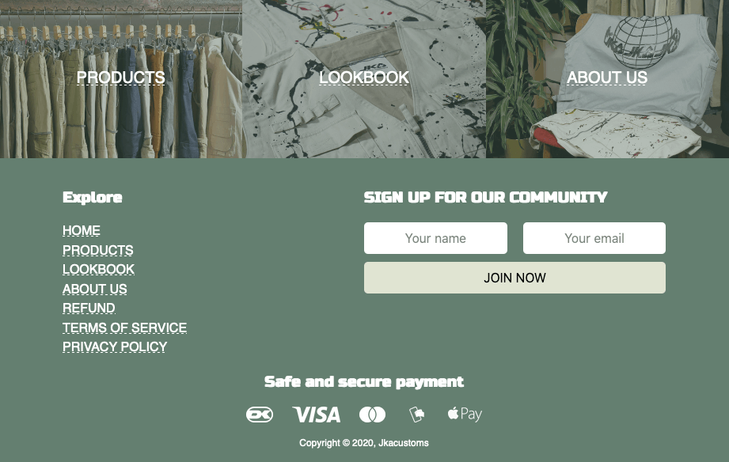
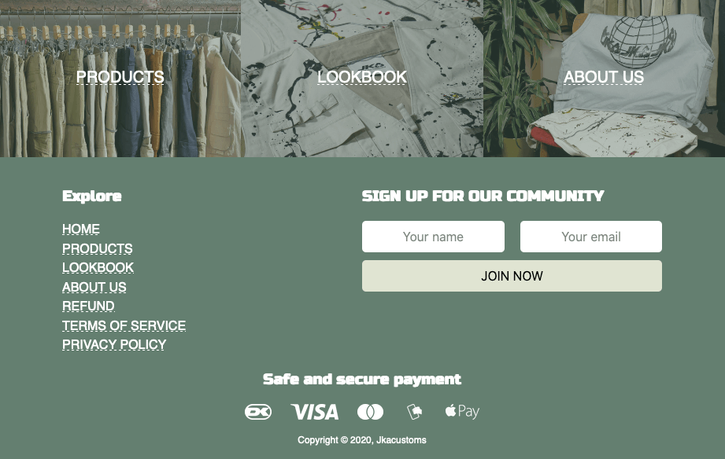
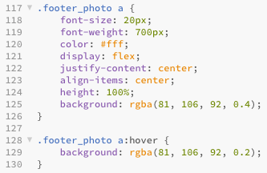
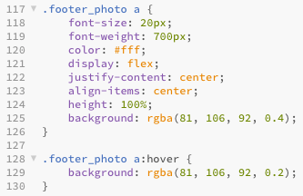

Responsive site
Hjemmeside med stilen digital retro-design (90'erne)
Hjemmeside med stilen digital retro-design (90'erne)


 



Vi har gennem hele forøbet benyttet os af "filosofien" Scrum. Der har vi brugt for at planlægge og styre vores arbejdesopgaver.
Vi brugte dette Trello Bord. Jeg brugte også Trello til at dele større arbejdesopgaver op for at overskulig gøre dem.

Jeg har fokuceret meget på forsiden. Vi ønskede at lave en ny og anderledes forside som man ikke ser alle steder. JKA's moto er World In Motion, af den grund lavede vi mere bevægelse på hjemmesiden. På forsien skabte vi interaktiv bevægelse ved, at lave en produkt-billede karusel hvor brugeren kan styre hastighed og ratning med musen.
Uden CSS er det ikke muligt at style hjemmesiden eller lave effekter. Jeg har bland andet lavet en hover effekt over billederne i footeren. Formålet med dette er at gøre brugeren klar over at man kan klikke på billederne.
Når man tager musen over billederne sker der to ting: For det første bliver det grønne overlay mere transperrant og for det andet skifter udseendet af understregningen. Ændringen af understregningens udseende er en lokal "regel" som vi bruger på hele siden. Derfor ved brugerne, at de kan klikke billederne.
Det grønne overlay der er over billederne, giver alle tre det samme look.
 

Video er rigtig godt til at skabe blikfang på sociale medier. Af den grund valgte vi at lave en SoMe-video. Derudover lavede vi også en baggrundsvideo til "About us"-siden. Denne videos formål er at skabe et indtryk af JKA's stil. Derfor har denne video ikke noget baggrundsmusik men blot stemnings-klip der kører i loop.
SoMe-videoen er eksporteret i kvadratisk format. Grunden til dette er at den så optagere mere plads i Facebook-feedet end videoer i 9:16-format. Videoen har også baggrundsmusik som der er klippet efter. Det sætter musikken i fokus og giver en friskt og ung stemning.
Mit primære bidrav til videoerne var undersøgelse og opsætning af udstyr samt optagelse på loaktion. Vi filmede alt på Panasonic Lumix G80 med stabilizer og anvent LED-lyspaneler.
Efter treenhalv uges intenst arbejde blev vi færdige med redesignet af JKA's hjemmeside. Du kan selv gå på opdagelse på vores redesignet hjemmeside.
Se hjemmesiden